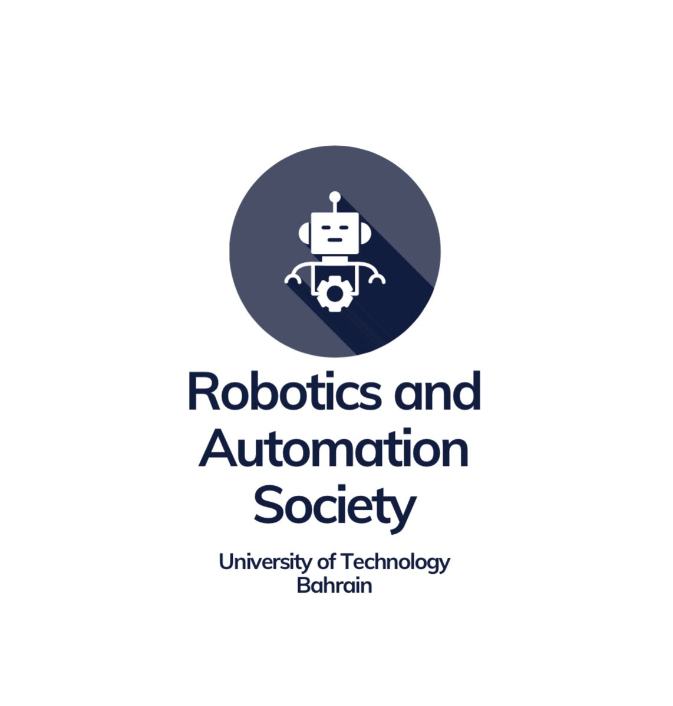
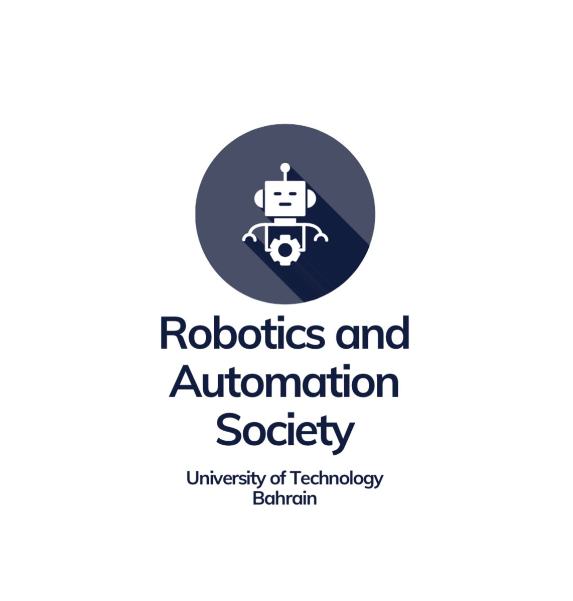

Course Overview
This student-led lab series at UTB is inspired by the AUBH MIT MISTI program. We provide hands-on STEM learning experiences, transforming traditional concepts into interactive projects. Students explore 3D modeling, rapid prototyping, electronics, and more through mini-projects and instructor check-ins.